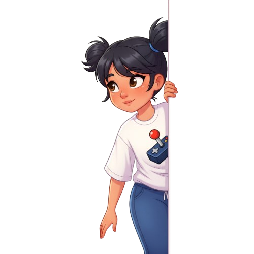

Женечка, ааа! У меня тут драма века! Я пошла чайник налить, а он... застрял в портале! Ну, то есть, я его уронила, и он закатился ПОД ДИВАН! И теперь он там светится и гудит! Что мне делать? Ты же стример, ты знаешь, как с порталами разбираться! Я сейчас только сбегаю, а вы тут пока квест "Спасти Чайник" продумайте!